<div class="panel">
    <div class="panel-body">
        <div id="cabdesc" class="well">
            <h2>Wiess Representatives</h2>
            <p>
                The Wiess Representatives work to create amazing events, keep the college running, and make memories around the college. They operate with complete autonomy to use their creative talents to serve the college through their specific responsibilities. Go Wiess Reps!
                <br>
            </p>
        </div>
        <table width="100%" border="0" cell-padding="30px" cell-spacing="30px" style="border-color: #ddd;" rules=rows>
          <col width="30%" height="100%">
          <col width="30%" height="100%">
          <col width="30%" height="100%">
        <tr>
    <td align="center" valign="top">
      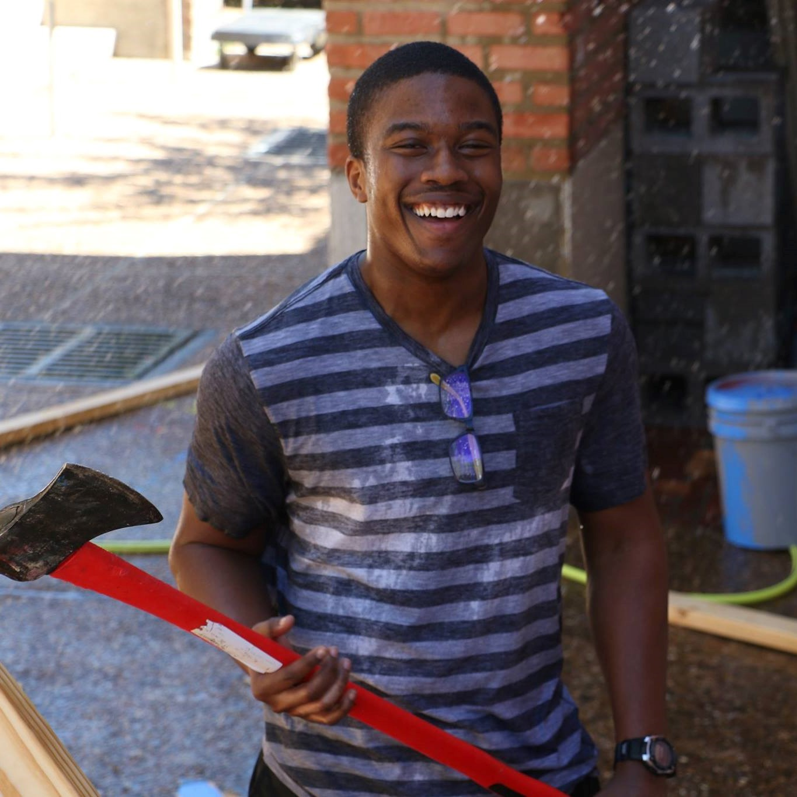
      <h3>Movie Rep</h3>
      <h2>Johnathon Berry</h2> <i>Email: jwb7@rice.edu</i><br>
      <i>Vision: I plan to throw multiple events throughout the year in the movie room, like movie showing movies, just dance parties, and karaoke shindigs. I also want everyone to know how to use the movie room appropriately, and I want to get movie tickets subsidized for big movies that come out during the year.</i><br><br>
      <p>First Acts: I would do an information session showing how to use the movie room and make sure everyone knows the list of the movies.</p>
    </td>
    <td align="center" valign="top">
      
      <h3>Vacuum Rep</h3>
      <h2>Dana Smith</h2> <i>Email: dms11@rice.edu</i><br>
      <i>Vision: I will be super accessible to Wiess and be able to provide the vacuum whenever! I will live in room 417 - contact me at my email dms11@rice.edu, Facebook message, or text 936-433-6686.  I will also be doing monthly drawings for a *free* vacuum of your room, look out for a Google form soon :)</i><br><br>
      <p>First Acts: I would like to start the monthly drawing!</p>
    </td>
    <td align="center" valign="top">
      
      <h3>Listserv Rep</h3>
      <h2>Margaret Roddy</h2> <i>Email: mhroddy@rice.edu</i><br>
      <i>Vision: I plan to be a speedy and organized listserv rep. I will filter out unnecessary emails and promptly send forth all relevant messages. I also plan to better integrate the class-specific listservs to minimize college-wide emails and to un-clutter inboxes.</i><br><br>
      <p>First Acts: I will send an introductory email, make sure the listserv is up to date, and collect senior emails for the alumni listserv. WOO EMAILS</p>
    </td>
  <tr>
<!-- ROW 2 -->
    <td align="center" valign="top">
      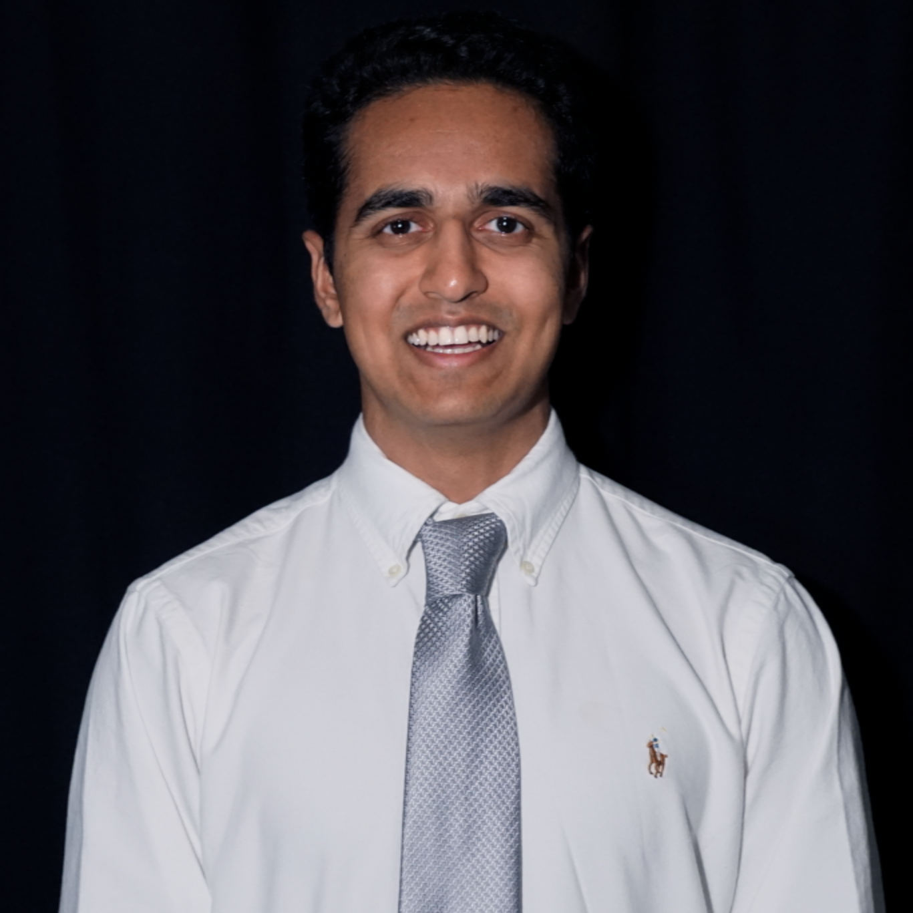
      <h3>Videographer Rep</h3>
      <h2>Nilen Patel</h2> <i>Email: nilenpatel@rice.edu</i><br>
      <i>Vision: Films are a powerful way to communicate ideas, and I plan to enhance our community by producing content that enables us to enjoy our past experiences, reflect on important ideas, and come together as Team Family Wiess. In addition to special event films, I will make a yearly recap video that showcases key highlights.</i><br><br>
      <p>First Acts: I want to expand our videography capabilities to exceed that of other colleges, and I will put in a budget request for camera equipment and possibly a drone for the community and I to use. </p>
    </td>
    <td align="center" valign="top">
      
      <h3>Tailor Rep</h3>
      <h2>Ashley McDonald</h2> <i>Email: alm18@rice.edu</i><br>
      <i>Vision: I will be available to teach you how to mend/alter your clothes and if you need help choosing an outfit, I can help with that too! </i><br><br>
      <p>First Acts: My first action will be to go buy more thread and needles!</p>
    </td>
    <td align="center" valign="top">
      
      <h3>Kegerator and Tap Rep</h3>
      <h2>Perry Goldstein</h2> <i>Email: pmg4@rice.edu</i><br>
      <i>Vision: My vision is to have one tap in each room that plans on having a keg at some point through the year and educating the residents of that room on how to tap and untap a keg. Second, I want to educate anyone who would like to know how the kegerator works on that subject matter.</i><br><br>
      <p>First Acts: First action will be to make sure that the kegerator and taps are fully functioning and take inventory on how many taps wiess has. Second, I will learn how all aspects of the kegerator works and teach people who want to learn how to use it.</p>
    </td>
  <tr>
<!-- ROW 3 -->
    <td align="center" valign="top">
      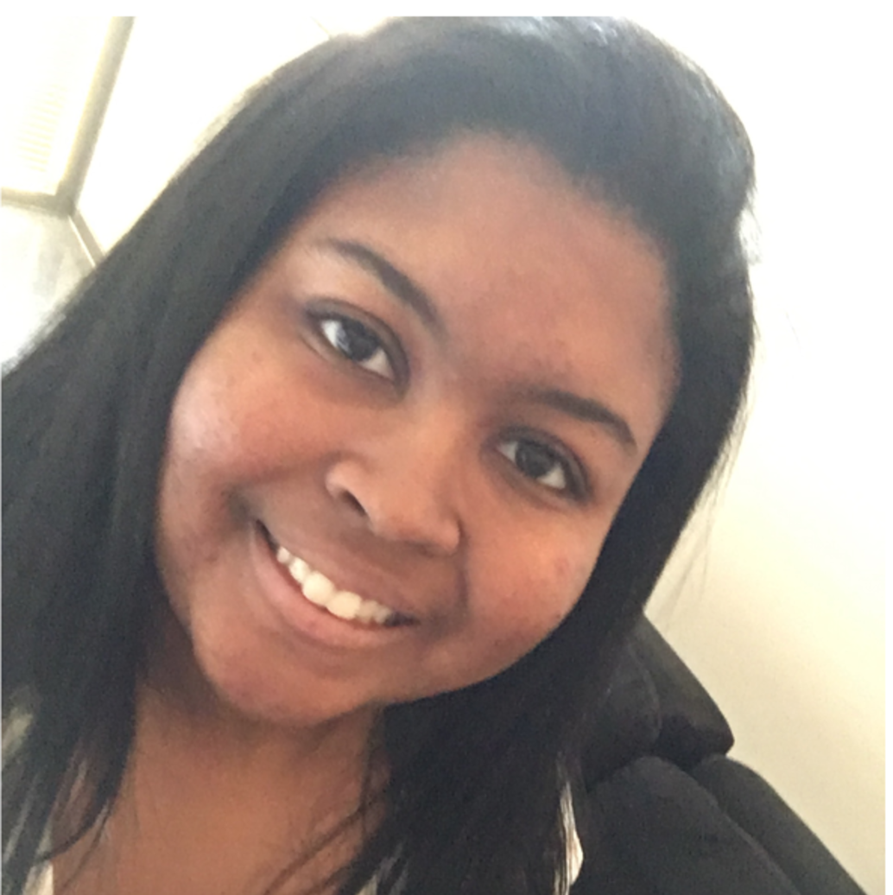
      <h3>Yeah Wiess Reps</h3>
      <h2>Zoe Clark and Priscilla Li</h2> <i>Email: zcc3@rice.edu and ppl1@rice.edu</i><br>
      <i>Vision: 1) T-shirt design contest (one each semester) 2) Make screen-printing T-shirts more accessible for Wiessmen in Wiess-related activities 3) More efficient system for drying T-shirts and giving them back to Wiessmen. We will update Wiess through Facebook and Listserv!!</i><br><br>
      <p>First Acts: 1) Learning the process of screen printing T-shirts. 2) Contacting 2016-2017 Yeah Wiess Reps about their roles.</p>
    </td>
    <td align="center" valign="top">
      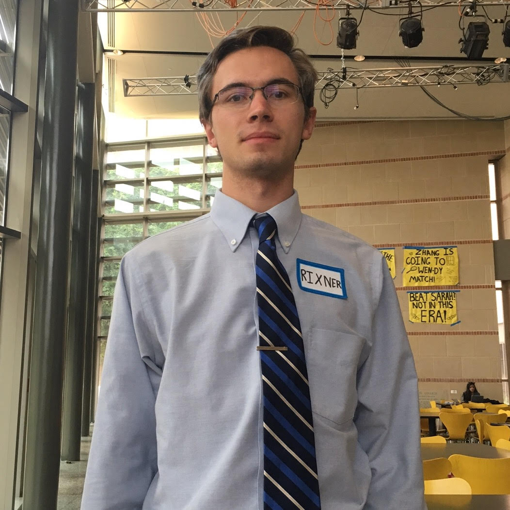
      <h3>Assistant Webmaster</h3>
      <h2>Jack Duryea</h2> <i>Email: jd50@rice.edu</i><br>
      <i>Vision: I plan to help upgrade and maintain teamwiess.com. The webmaster and I are currently making big changes to the website and we plan to host a launch party soon so that people can see the new site!</i><br><br>
      <p>First Acts: I am currently helping update the look and feel of teamwiess.com to make it feel more modern and user friendly.</p>
    </td>
    <td align="center" valign="top">
      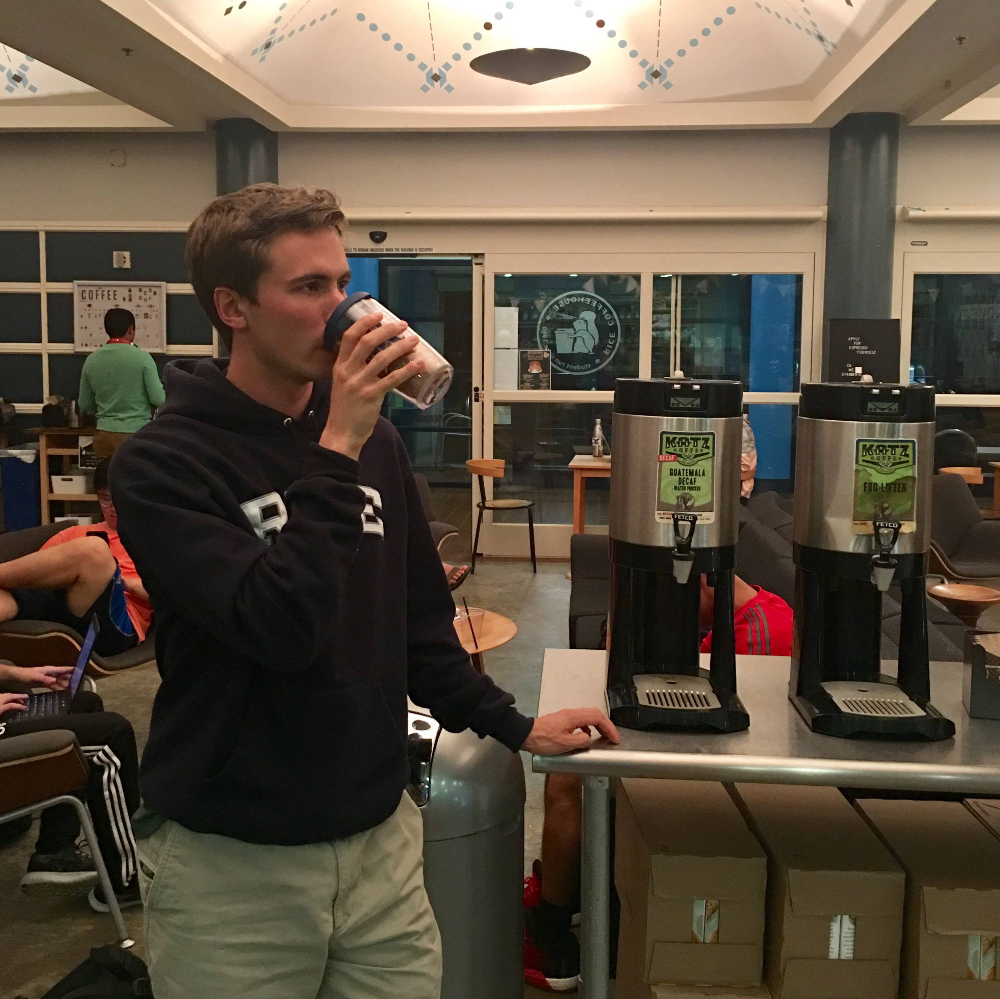
      <h3>Coffee Rep</h3>
      <h2>Jack Duryea</h2> <i>Email: jd50@rice.edu</i><br>
      <i>Vision: Coffee is the nectar of life for many college students, and I intend to provide Wiessmen with nothing less than the finest coffee. I would like to hold late night coffee parties during Dead Days, and have various coffee sampling parties throughout the year for the coffee connoisseurs among us. In the case of a coffee emergency, I can hook people up with a cup of joe from my personal supply.</i><br><br>
      <p>First Acts: My first plan of action is to work with South Servery to make higher quality coffee available to students during meal times. My next step is to have late night coffee available to Wiessmen during the upcoming Dead Days.</p>
    </td>
  <tr>
<!-- ROW 4 -->
    <td align="center" valign="top">
      
      <h3>College Night Reps</h3>
      <h2>Anson Tong Drew Keefer Kevin Peng</h2> <i>Email: ajt9@rice.edu</i><br>
      <i>Vision: Our vision for College Night is to make it more engaging and memorable by organizing games, collaborating with the intercollegiate reps, and taking more Wiess input. We plan on keeping Wiess updated through announcements at Cabinet and listserv emails.</i><br><br>
      <p>First Acts: First off, we plan on talking to Mike, Liz, and Sarah to learn more about / work on Wiess Day and to lay out a general plan for Fall College Night.</p>
    </td>
    <td align="center" valign="top">
      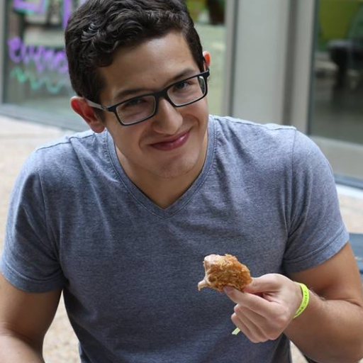
      <h3>A/V Rep</h3>
      <h2>Adrian Rodriguez</h2> <i>Email: amr13@rice.edu</i><br>
      <i>Vision: My vision is to make enjoying digital media easy and convenient for Wiessmen. I will keep Wiess updated by making Cabinet announcements and Facebook group posts detailing additions I've made to the movie room.</i><br><br>
      <p>First Acts: Creating a station for HDMI adapters and adding concise sticky notes on how to use them in the movie room.</p>
    </td>
    <td align="center" valign="top">
      
      <h3>RPC Rep</h3>
      <h2>Anson Tong</h2> <i>Email: ajt9@rice.edu</i><br>
      <i>Vision: I want to be more consistent about updating Wiess about RPC events throughout the year and being a point of contact for any questions/concerns regarding RPC.</i><br><br>
      <p>First Acts: I'll be meeting with RPC's Director of College Relations and posting in the Wiess page about upcoming events.</p>
    </td>
  <tr>
<!-- ROW 5 -->
    <td align="center" valign="top">
      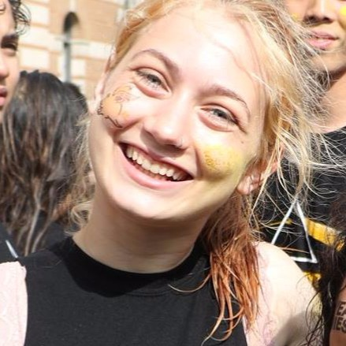
      <h3>International Student Ambassador</h3>
      <h2>Ilana Nyveen</h2> <i>Email: ian2@rice.edu</i><br>
      <i>Vision: I want to foster a more cohesive community by acting as a liaison between and support person for international students. I want to integrate all of our diverse cultures into Wiess events and offer a medium for international students to share their cultures with the rest of the college.</i><br><br>
      <p>First Acts: I want to put a world map up in Wiess with pins showing where we're all from and to celebrate the diversity we have in our college. I'm also hoping to get a Canadian-themed study break at some point, and I'll hopefully be able to represent all the cool places y'all are from too!</p>
    </td>
    <td align="center" valign="top">
      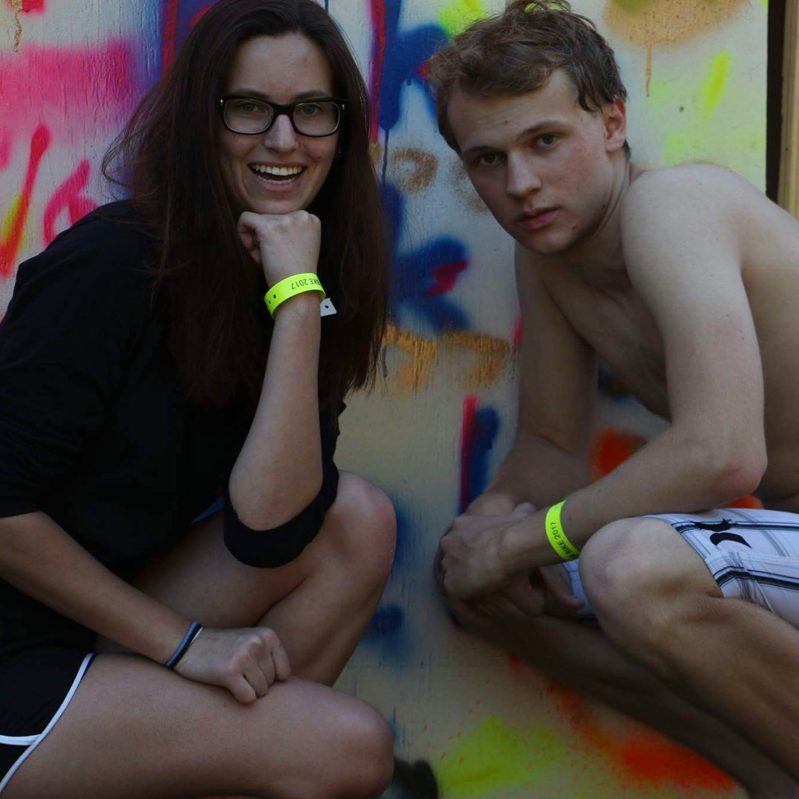
      <h3>IM Sports Reps</h3>
      <h2>Emma Every and Ellery Pickens</h2> <i>Email: ee28@rice.edu and esp2@rice.edu</i><br>
      <i>Vision: We want to increase the visibility of and participation in Wiess intramural sports. Our goal is to field full teams for all college sports in order to have fun and win more. We will stay in contact with Wiess about all things sports through Facebook, email, cab announcements and face to face interaction.</i><br><br>
      <p>First Acts: At the beginning of next year, we will full court press new students in order to drum up support for and participation in IMs (reduce Wiess apathy and make Wiess sports have a competitive and fun atmosphere) and organize IMs better by using GroupMe. We also intend to organize a Powderpuff Tailgate and bring back the Sexy Halftime Show.</p>
    </td>
    <td align="center" valign="top">
      
      <h3>Games Rep</h3>
      <h2>Shashank Mahesh</h2> <i>Email: sm103@rice.edu</i><br>
      <i>Vision: I want to make games accessible to all Wiessman and improve the game spaces in Sparkys/Upper Commons. I will do this by continuing regular board game nights, purchasing new board games and spearheading the effort to get a Wii U/fix the ping-pong table.</i><br><br>
      <p>First Acts: Try to purchase Wii U stuff and make the ping-pong table great again.</p>
    </td>
  <tr>
<!-- ROW 6 -->
    <td align="center" valign="top">
      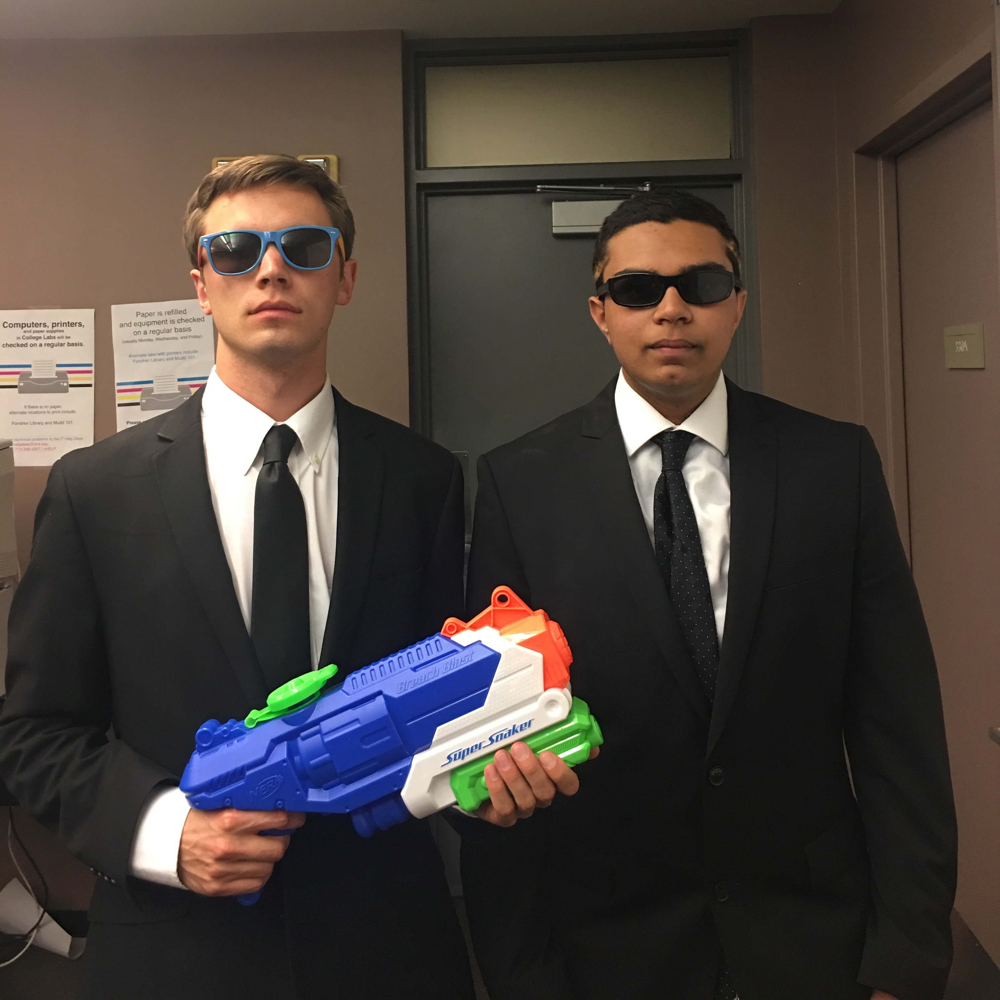
      <h3>Baker 13 Defense Captains</h3>
      <h2>Jack Duryea and Shamanth Kuramkote</h2> <i>Email: jd50@rice.edu and srk5@rice.edu</i><br>
      <i>Vision: As Baker 13 defense captains, we will protect Wiess from the armies of evil. We will oversee the planning of our defense systems and provide motivational Braveheart-like speeches before battle.</i><br><br>
      <p>First Acts: We will invest in the safety and strength of Wiess, equipping its citizens with all the necessary provisions (water balloons and the likes) to defend ourselves against the final Baker 13 battle of the year.</p>
    </td>
    <td align="center" valign="top">
      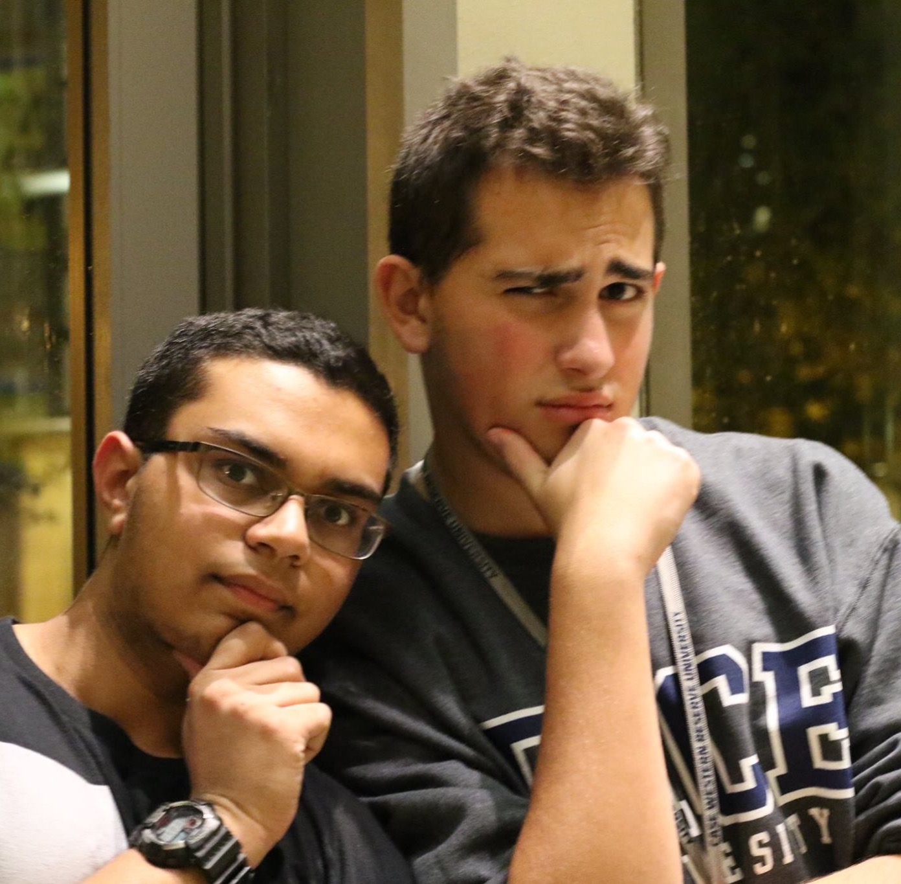
      <h3>Elections Rep</h3>
      <h2>Emre Yurtbay and Shammy Kuramkote</h2> <i>Email: eay2@rice.edu</i><br>
      <i>Vision: Our vision is to invigorate Wiess democracy by conducting and overseeing fair and transparent elections. We want to make sure Wiess is excited about voting and is committed to choosing the best representatives for the college.</i><br><br>
      <p>First Acts: We will learn about the logistics of Wiess elections as soon as possible and learn the rules to every last detail so we can run fair and transparent elections.</p>
    </td>
    <td align="center" valign="top">
      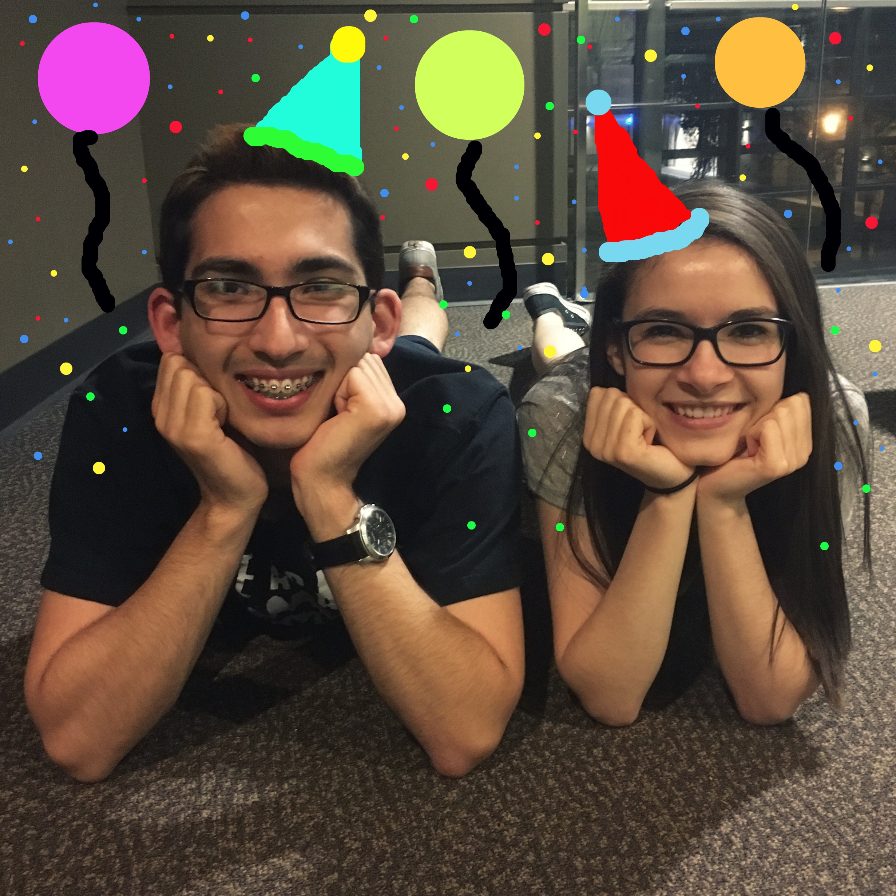
      <h3>Birthday Reps</h3>
      <h2>Sophie Hennings and Blaine Schmidt</h2> <i>Email: snh4@rice.edu and bms5@rice.edu</i><br>
      <i>Vision: Ensure that everyone's birthday is special and recognized. To keep Wiessmen updated, we will make a monthly announcement each time we change the birthday bags in the Commons. This way, people are reminded to tell their friends–and other fellow Wiessmen–happy birthday, and can give them a card with the stationery provided. </i><br><br>
      <p>First Acts: Get stationery, such as paper bags, markers, colored pencils, and other fun writing utensils for people to write and leave birthday messages. Also, we should change the sign, but we're not sure if that's our job or the ex-reps. </p>
    </td>
  <tr>
<!-- ROW 7 -->
    <td align="center" valign="top">
      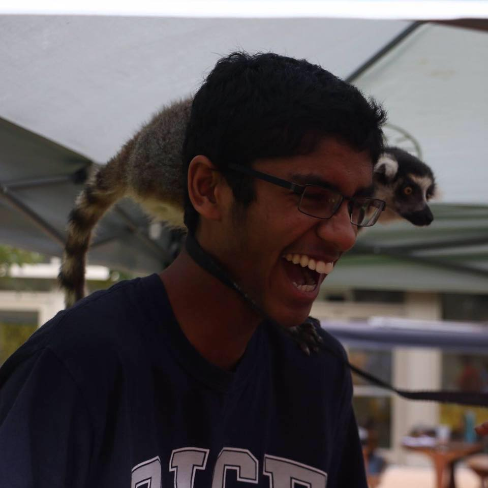
      <h3>Food Rep</h3>
      <h2>Shaurey Vetsa</h2> <i>Email: ssv3@rice.edu</i><br>
      <i>Vision: As food rep, I believe that it is my duty to uphold Housing and Dining to the standards of the average Wiessman. I make sure that South Servery will be great again. Emails will be sent out through the list serv so that everyone is up to date on the hot goss of South Servery food.</i><br><br>
      <p>First Acts: My first goal will address the consistent defection of several individuals to Baker breakfast. One of these renegades remarked that Baker’s servery has “superior hash browns.” I will scientifically analyze why Baker servery’s hash browns are more desirable and will bring the same quality to South. Second, I would like Wiessmen and maybe Hanzenites to have more of a say in the type of food they would like to eat on some days in a month. </p>
    </td>
    <td align="center" valign="top">
      
      <h3>Campanile Editor</h3>
      <h2>Simi Rahman</h2> <i>Email: ssr8@rice.edu</i><br>
      <i>Vision: I envision Wiess' pages in the Campanile being filled with fun, vibrant pictures we fondly look back on years down the road. I want to have pictures that not only capture the perfect moments but also include as many Wiessmen as possible. I plan to send a preview of our pages for feedback from the college as a whole so everyone can contribute.</i><br><br>
      <p>First Acts: Leaf through old Campaniles in the Wiess PDR for inspiration; anyone is welcome to join me!</p>
    </td>
    <td align="center" valign="top">
      
      <h3>Newsletter Rep</h3>
      <h2>Shweta Sridhar</h2> <i>Email: ss142@rice.edu</i><br>
      <i>Vision: I aim to keep the newsletter simple and informative so all Wiessmen can benefit from it. I will send out newsletters consistently and in a timely manner so students have the opportunity to learn about campus-wide and Wiess related events.</i><br><br>
      <p>First Acts: My first actions will be to follow Michelle's (the former newsletter rep) example and produce a newsletter that is comparable in quality and effectivity.</p>
    </td>
  <tr>
<!-- ROW 8 -->
    <td align="center" valign="top">
      
      <h3>Varsity Sports Liason</h3>
      <h2>Colin Hensen</h2> <i>Email: chh4@rice.edu</i><br>
      <i>Vision: I'll be keeping Wiess informed by announcing athletic events and news at Wiess Cabinet, and would like to eventually hang athletic schedule posters in the commons, plan Wiess tailgates before football games and bring back Grill on the Hill. We're lucky to be able to interact with our amazing student-athletes on a daily basis and live so close to so many of our athletic facilities, and I want to encourage all Wiessmen to support our varsity athletes and fellow students in their athletic endeavors! RFND </i><br><br>
      <p>First Acts: I plan on announcing upcoming events through cabinet/facebook and working to secure a budget for events next fall.</p>
    </td>
    <td align="center" valign="top">
      
      <h3>Cute Dog Rep</h3>
      <h2>Johannah Palomo</h2> <i>Email: cutedogs@rice.edu</i><br>
      <i>Vision: The purpose of the cute dog rep position is not only to share a love of animals with the entire college, but to also to provide breaks with the purpose of maintaining mental health and stressing the importance of life outside of problem sets and homework. I plan to continue developing this position through the Team Fluffball Wiess newsletter, animal study breaks, and organized service trips to animal shelters during the upcoming school year. </i><br><br>
      <p>First Acts: I will be sending out a newsletter within the next two weeks and I will also begin contacting animal shelters about the possibility of dog study breaks.</p>
    </td>
    <td align="center" valign="top">
      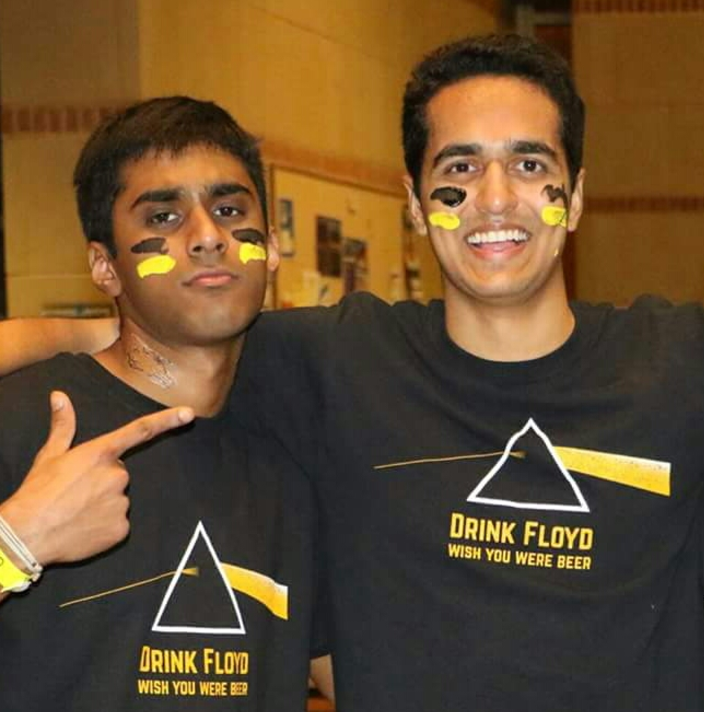
      <h3>Intercollegiate Reps</h3>
      <h2>Raj Dalal and Nilen Patel</h2> <i>Email: rmd9@rice.edu and nvp2@rice.edu</i><br>
      <i>Vision: Our vision is for a couple of mixer-type of events with other colleges on campus in order for underclassmen and even upperclassmen to expand their network of friends and acquaintances across campus. Moreover, we would like to work on reliving some of the O-week college and beer bike college rivalries by cultivating greater turnout for college sporting events and also creating competition events of our own (possibly). </i><br><br>
      <p>First Acts: Our first action will be to utilize all the Wiess co-advisors and their connection with their respective colleges to start planning some intercollegiate mixers.</p>
    </td>
  <tr>
<!-- ROW 9 -->
    <td align="center" valign="top">
      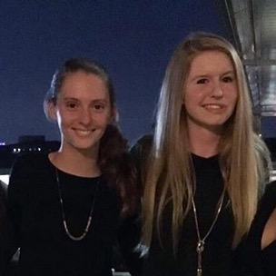
      <h3>Kitchen Rep</h3>
      <h2>Sarah Glover and Sage McAdams</h2> <i>Email: skg5@rice.edu</i><br>
      <i>Vision: Our vision is to keep the kitchens well maintained, clean, and stocked with basic ingredients all year, as well as to enhance the lives of Wiessmen by providing sweets. We will keep Wiess updated by announcing events and ideas through the Facebook page or the listserv.</i><br><br>
      <p>First Acts: Our first actions are going to be to assess the current state of the equipment in the kitchens and survey Wiess to see what we're lacking (cake pans, muffin tins, etc) and what needs to be replaced. </p>
    </td>
          
          <!-- EXAMPLE PROFILE ENTRY
           <td align="center" valign="top">
            
            <h3>Title_3</h3>
            <h2>first_last_name</h2> <i>Email: email_@rice.edu</i><br>
            <i>Description</i><br><br>
            <p>Blurb</p>
          </td> -->
    <tr>
      </table>
    </div>
</div>
